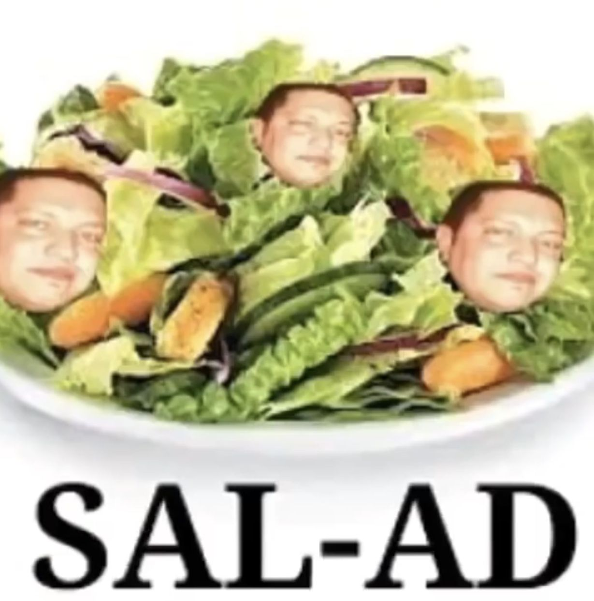
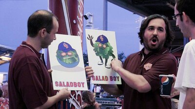

How i make salad

A salad, not an american classic, and previously known as just food.
Eating a salad really makes you feel in touch with your ancestors. A time where
all that existed was bitter plants with no Ken's thousand island dressing.
Ingredients
- Romaine hearts
- Spinach
- Kale
- Shredded carrots
- Broccoli
- Blueberries/misc berries
- Cheese
- Tortilla chips
- Nutritional yeast
- Thousand island dressing
Steps
- Cut romaine hearts and put in bowl
- Cut the green tops off of the broccoli and put into bowl
- add in prepacked spinach and kale
- throw in nutritional yeast
- put int carrots
- put in shredded cheese
- throw in berries
- throw in tortilla chips
- put dressing on and stir
